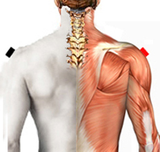

Treponema Pallidum - Sífilis
Pares
deltoides - deltoides
cuadrado lumbar - cuadrado lumbar *
clítoris - pélvis

*Nota: No hay información sobre Tripanozoma palidum, en su lugar presentamos lo referente a la bacteria Treponema pallidum.
El par clítoris - pélvis puede aparecer como Reservorio.
Revisar todos los pares.
Generalidades:
En caso de infección bacteriana la sintomatología consiste en trastornos pélvicos, cistitis, vaginitis, sangrado rectal, ardor.
Se confunde con Artritis. Causa Reumatismo Articular. Dolores dorso lumbares. Si se asocia a deltoides-deltoides produce espondilitis anquilosante (rigidez de todas las vértebras). Artrosis de Cadera o Sacro. Checar par Ligamento externo de la rodilla.
Treponema Pallidum:
Es una bacteria gram negativa con forma espiral (Espiroqueta) causante de varias enfermedades, entre ellas la Sífilis. Existen 3 subsepecies principales de esta bacteria, que es muy fragil en el medio exterior, no vive en temperaturas de más de 42° C., no resiste la penicilina.
Transmisión
Transmisión sexual, por contacto con la pus del chancro o ronchas. Extremar precauciones.